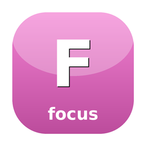

Focus-ring state machine — ordered focusable regions with Tab/Shift-Tab traversal
A tiny, dependency-free focus ring for full-window terminal UIs: an ordered set of focusable regions with a single focused member and wrap-around Tab/Shift-Tab traversal. It is the app-wide "which panel has focus" state for a TUI layout — register each focusable region (sidebar, content grid, filter bar…), map Tab to next() and Shift-Tab to previous(), and give the region current() returns an accent border when you render. The ring carries no rendering or key decoding of its own, so it composes with any candy-core model without pulling in dependencies. Original SugarCraft component — no 1:1 upstream; inspired by focus-traversal in charmbracelet/bubbles and sugar-dash's FocusManager.
composer require sugarcraft/candy-focususe SugarCraft\Focus\FocusRing;
$ring = FocusRing::of('sidebar', 'grid', 'filter'); // 'sidebar' is focused
$ring = $ring->next(); // → 'grid'
$ring = $ring->next(); // → 'filter'
$ring = $ring->next(); // → 'sidebar' (wraps)
$ring = $ring->previous(); // → 'filter' (wraps the other way)
$ring = $ring->focus('grid'); // jump straight to a region
$ring->current(); // 'grid'
$ring->isFocused('grid'); // trueWire it into a candy-core model's update(), then let each region style itself in view():
if ($msg instanceof KeyMsg && $msg->type === KeyType::Tab) {
$ring = $msg->shift ? $this->ring->previous() : $this->ring->next();
return [$this->withRing($ring), null];
}
// …and in view():
$style = $ring->isFocused('sidebar') ? $accentBorder : $plainBorder;current() is null, index() is -1).next() / previous() wrap past the ends and are no-ops with fewer than two regions.FocusRing and leaves the receiver untouched, so it slots into the immutable-model (TEA) pattern.isFocused() when drawing. Composes with any candy-core model.isFocused() in view() to highlight the active region.| Class | Method | Description |
|---|---|---|
| FocusRing | new(): self | An empty ring with nothing registered or focused |
| FocusRing | of(string ...$ids): self | A ring of regions (duplicates dropped), focusing the first |
| FocusRing | register(string $id): self | Add a region to the end of the traversal order |
| FocusRing | unregister(string $id): self | Remove a region, preserving focus where possible |
| FocusRing | focus(string $id): self | Focus a specific registered region |
| FocusRing | next(): self | Tab traversal — move to the next region (wrapping) |
| FocusRing | previous(): self | Shift-Tab traversal — move to the previous region (wrapping) |
| FocusRing | current(): ?string | The focused region id, or null when empty |
| FocusRing | isFocused(string $id): bool | Whether $id is the focused region |
| FocusRing | has(string $id): bool | Whether $id is registered |
| FocusRing | index(): int | Focused position, or -1 when empty |
| FocusRing | ids(): list<string> | Registered region ids in traversal order |
| FocusRing | count(): int | Number of registered regions |
| FocusRing | isEmpty(): bool | Whether the ring has no regions |